Original sprites above, matched Blender carriage views below. The moving comparisons use the fixed game projection and existing service spacing.
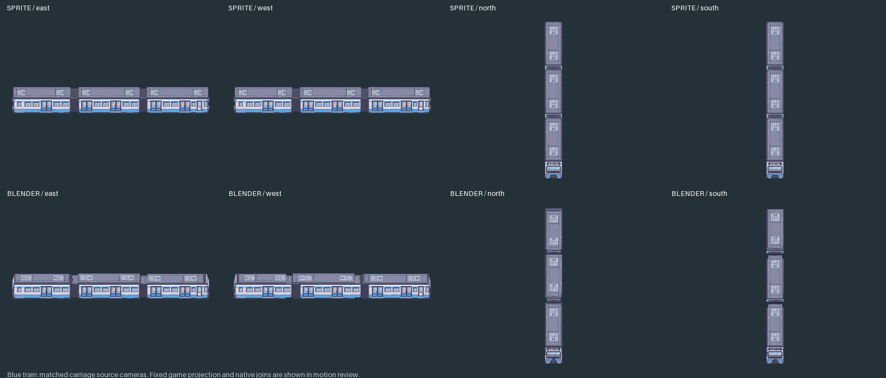
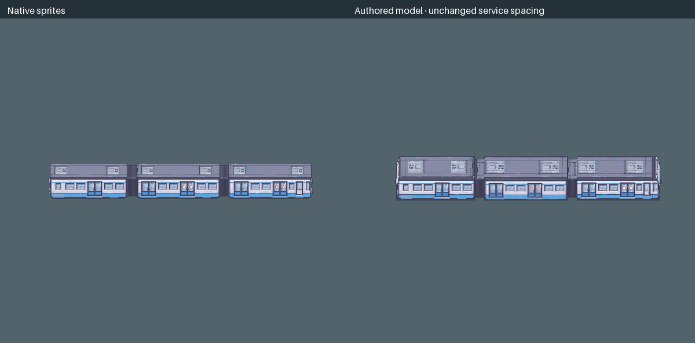
Source side/end lengths differ. Static couplers leave gaps or overlap under existing native spacing, especially near vertical poses. Bogies and couplers remain at rest; all 24 wheels rotate independently under the original skirts. The live game still uses its existing train sprites.
Interactive curve review · Interactive reversal review · Existing city service with prototype visuals
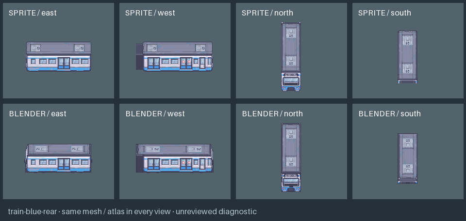
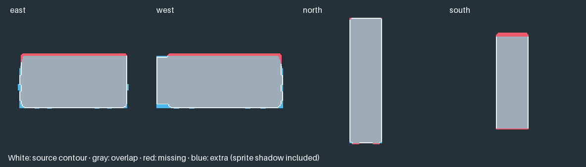
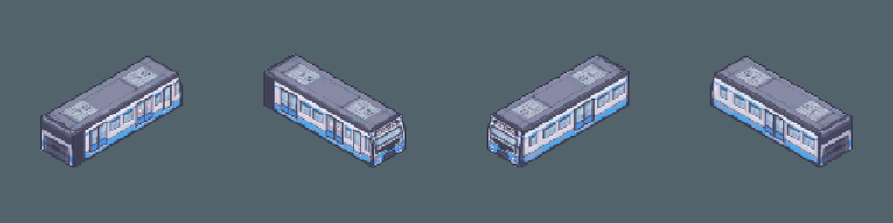
Download rear model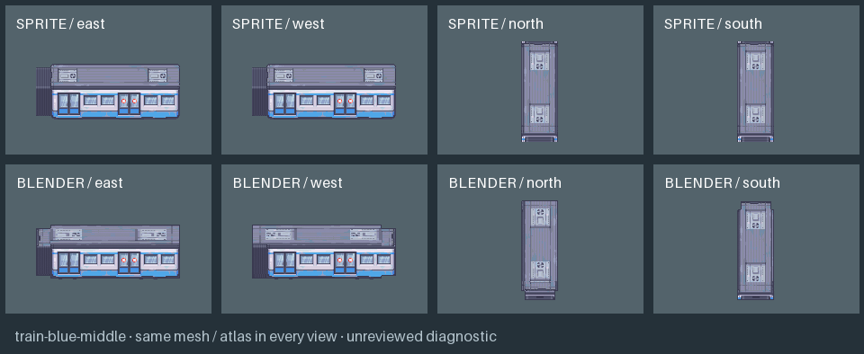
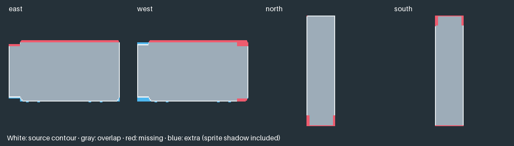
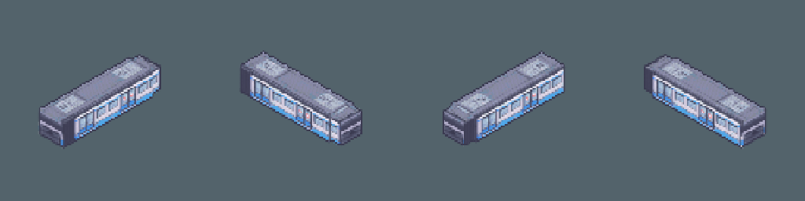
Download middle model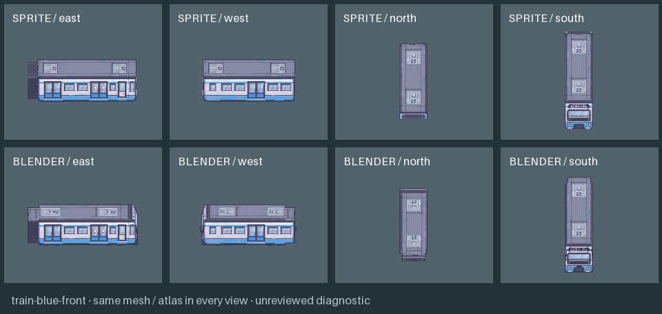
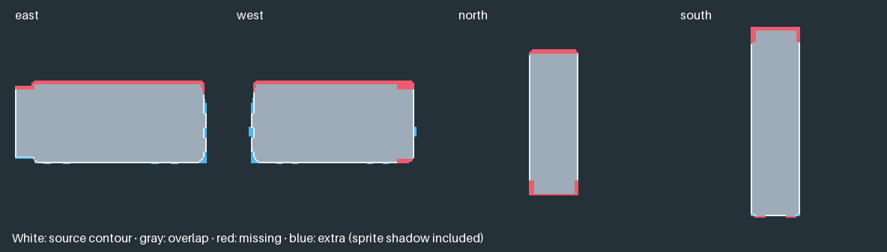
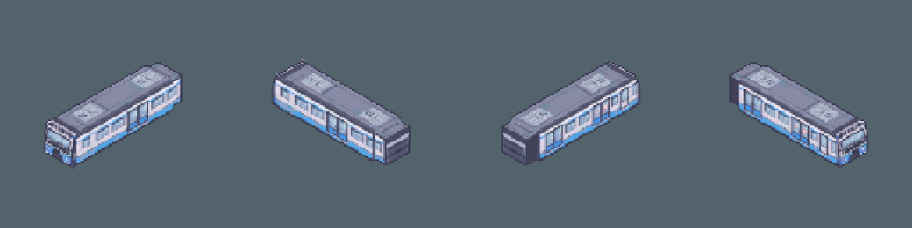
Download front modelModern Exteriors source artwork by LimeZu. Exact moving-art review remains pending; no production approval is inferred.